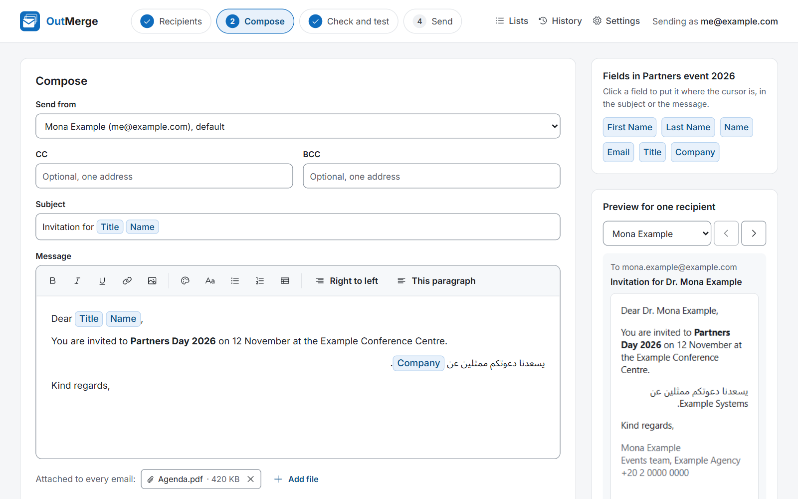

Every email is personal
Put First Name, Last Name, Title or any column of your list into the subject and the message. Each person gets their own email with their own details.
OutMerge sends each person their own email, with their name and details filled in, from your own Outlook account and with your usual signature. It runs on your PC, in Arabic and English.

Pick a list, write once, check it, and send. Every email is a real one from your Outlook, not a newsletter.
Put First Name, Last Name, Title or any column of your list into the subject and the message. Each person gets their own email with their own details.
Sent through the classic Outlook on your PC, from the account you choose, with your usual signature. Copies land in your Sent Items like any email you write.
Right-to-left paragraphs next to left-to-right ones, Arabic names kept exactly as you typed them, and a font that reads well in Outlook.
Import an Excel workbook or a CSV file, read your Outlook contacts or an address-book group, or type a list in OutMerge.
See the email for any recipient, send yourself a test, and get a short list of empty fields, invalid addresses and duplicates.
A gap between emails, Pause and Resume, a clear count of what was sent and what waits in your Outbox, and the results as an Excel file.
OutMerge is a desktop app, not a website. Your lists, emails and history stay on your own computer.
One file, no installer and no admin rights. Keep it in any folder of your own and double-click it.
Import a workbook, a CSV file or an Outlook group, and check the names and addresses in the preview.
Write the email with fields, look at it for any recipient, send yourself a test, then send to everyone.
Published with the first releaseWindows may say "Windows protected your PC", because OutMerge is not signed with a commercial certificate. Choose More info, then Run anyway. You can compare the file's SHA-256 with the one shown here first.
Windows shows "Windows protected your PC" for apps that are not signed with a commercial certificate. Choose More info, then Run anyway. To be sure the file is the one published here, run Get-FileHash .\OutMerge.exe in PowerShell and compare the result with the SHA-256 above.
No. OutMerge works through the classic Outlook for Windows (2016 or later), which lets other programs on the PC send email through it. The new Outlook does not.
Not on a PC with up-to-date antivirus, which is the usual case. If your organisation's settings make Outlook ask, OutMerge tells you before you send.
No. Your lists, emails and history stay on your PC, encrypted for your Windows account. Emails leave only through your own Outlook.
OutMerge counts an email as Sent once its copy is in your Outlook Sent Items. Until then it shows it as waiting in your Outbox, and checks again every minute and whenever you press Check Sent Items now. It never sends the same email twice.
In OutMerge, open Settings and press Check for updates. If a new version exists, OutMerge shows what changed and downloads it only when you say so. It checks the file's SHA-256 and signature, then replaces itself when you restart it. Your lists and history stay as they are. You can also download the new file here and replace the old one.